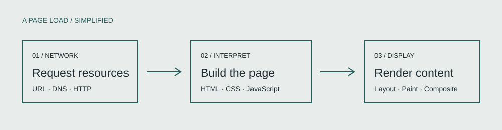

IT 3203 / 01
Web browsers
Evolution, architecture, and the choices behind everyday browsing.
A browser turns files delivered across a network into something we can read and use. This project looks at how that happens, how browsers developed, and what keeps one website from accessing another website’s information.

In this project
- HistoryEarly experiments and the growth of the browser.
- How browsers workThe path from a URL to a rendered page.
- Security & privacyOrigins, process boundaries, and stored data.
- Performance & futureWhy pages slow down and what may come next.
- Key conceptsSeven terms used throughout the research.
- ReferencesSources and places to continue learning.
- AboutKaleb Harper and the purpose of this project.
Key terms
Rendering engine · DOM · CSSOM · HTTP · Sandbox · Same-origin policy · Cache
Read the definitions